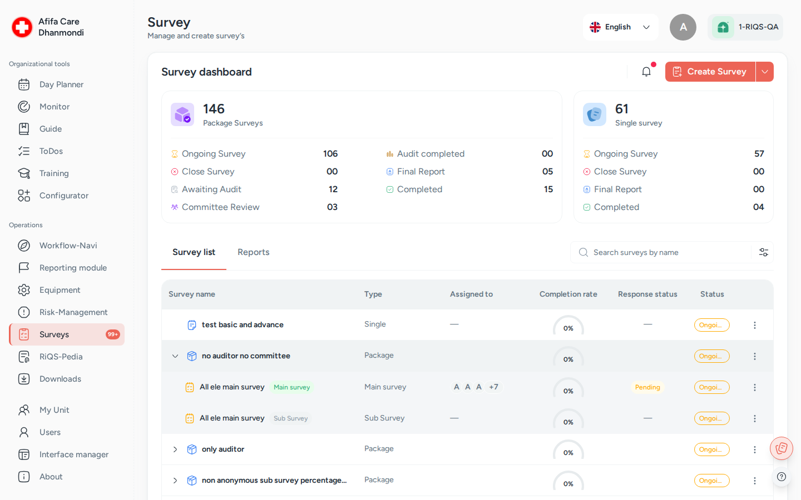

Surveys¶
In one sentence: Ask staff, patients or partner units a set of questions, collect their answers, compare the results, and, for certifications, have an auditor and a committee check them before a final report is written. Menu: Surveys · Status: Live (some parts planned, see below)

Survey dashboard: package and single surveys by status, and the survey list. Screens show test data.
What it is¶
Surveys lets a unit or an organisation send out a questionnaire and see the results in one place. The questions are not typed in here. They come from a survey template that someone has built beforehand in the Configurator. In the Surveys module you pick the template, decide who should answer and by when, and then follow the answers as they come in.
There are two kinds of survey:
- A General Survey is a single questionnaire. Example: a yearly staff satisfaction survey.
- A Certification Package is a bundle: one main survey plus one or more sub-surveys (for example one for staff and one for patients). Once enough answers are in, the package goes through an audit and a committee review. Think of it like an exam: people answer the questions, an examiner (the auditor) checks the work and can send parts back, and an exam board (the committee) gives the final verdict, Certified or Denied.
People inside RIQS answer from the Surveys module or from their Workflow-Navi. People outside RIQS (patients, partner units, external auditors) answer through a link or a QR code, without logging in.
At the end, RIQS shows an evaluation: points per question, how many people answered, and how a person or unit compares with the others (the benchmark). A final report can then be created from a report template and downloaded as a PDF.
Key terms¶
| Term | Meaning |
|---|---|
| General Survey | A single survey with its own template, participants and due date. |
| Certification Package | A main survey plus at least one sub-survey, with an optional audit and committee review. |
| Main survey / Sub-survey | The parts of a certification package. The main survey goes to the unit's Power Users. Sub-surveys are shared with the people who should answer them. |
| Survey template | The question list, built in the Configurator. Each answer option can carry points. |
| Basic points / Advanced points | Points given per answer option (1 to 5, 1 by default). They are used to score each response. |
| Minimum response | How many answers are needed before the survey counts as complete. |
| Minimum basic points | The score (as a percentage) a survey should reach. |
| Participants | The people the survey is shared with. They can be internal (RIQS users) or external (anyone with the link). |
| Auditor | A function role. The person who reviews a certification package, adds remarks, and approves it or sends surveys back. Can be a RIQS user or an external email address. |
| Committee | A function role. The person or people who make the final decision: Certify or Decline. Can be internal or external. |
| Send back | The auditor returns one or more surveys for correction, with remarks. |
| Close survey | Stop collecting answers. The survey moves to Closed. |
| Active / Inactive | An inactive survey is hidden from the normal list and accepts no answers or actions. |
| Evaluation | The results screen, with the Organization, Units and Individuals tabs. |
| Final report | The formal report built from a report template. It can be saved as Draft and later as Completed. |
| Admin View | A switch for administrators to see surveys across the whole organisation instead of one unit. |
Who uses it¶
| Role | What they typically do here |
|---|---|
| RiQS Administrator | Supports clients. Sees surveys across organisations. The only role that can Reopen a closed survey, and the only role that can delete in audit-safe mode. Cannot act as auditor or committee. |
| Group Administrator | Creates organisation-level surveys and packages, shares them with units, follows progress in Admin View. |
| Administrator | Same as Group Administrator for their own organisation. |
| Power User | Runs surveys for their unit: creates, shares, closes, sends to the auditor and writes the final report. Receives the main survey of a package. |
| Management | Runs surveys at unit level, like a Power User: creates, shares, closes, sends to the auditor and writes the final report. Sees the surveys assigned to them on the dashboard. Answers surveys shared with them. |
| Professional | Answers surveys shared with them (from the Cockpit) and sees their own result compared with the unit. Does not open the Survey dashboard. |
| Auditor | Reviews the packages they are named on. Adds remarks, approves or sends back. |
| Committee | Reviews the packages they are named on. Certifies or declines, with a comment. |
| External participant | Fills in a survey through a link or QR code, without an account. |
How it works¶
General Survey
- A Power User or administrator creates the survey from a template and assigns it to units.
- They share it with participants (internal users, and/or external people through a link or QR code).
- Participants fill it in. The completion bar grows.
- The creator closes the survey (it can also stop taking answers on its due date, if set up that way), marks it as completed, and generates the final report.
Ongoing → Closed → Final Report → Completed
Certification Package
- An administrator or Power User creates the package: main survey, sub-surveys, auditor and committee.
- The main survey goes to the Power Users of each assigned unit. Sub-surveys are shared with participants.
- When enough answers are in, the unit clicks Send to Auditor.
- The auditor reviews everything. They either Send Back some surveys with remarks (the package returns to Ongoing and the participants correct only the affected questions), or Approve.
- After approval, the unit clicks Send to Committee.
- The committee Certifies or Declines, with a comment. Either way the package moves on to the final report, with the decision recorded.
- The unit generates the final report, saves it as draft as often as needed, and then saves it as final.
Ongoing → Closed → Audit Review → Audit Completed → Committee Review → Final Report → Completed
If no audit is set up, the package can be marked complete directly after Ongoing / Closed. If audit is set up but no committee, it can be marked complete after Audit Completed.
Statuses you can see
| Status | What it means | What moves it on |
|---|---|---|
| Ongoing | Answers are being collected. | Close Survey, Send to Auditor or Mark as Completed. |
| Closed | No more answers are collected. | Send to Auditor or Mark as Completed. A RiQS Administrator can Reopen it. |
| Audit Review | The auditor is checking the package. | Auditor clicks Approve (to Audit Completed) or Send Back (back to Ongoing). |
| Audit Completed | The audit is approved. | Send to Committee, or Mark as Completed if no committee is set up. |
| Committee Review | The committee is deciding. | Committee clicks Certify or Decline. |
| Final Report | The final report is being written. | Saving the report as final. |
| Completed | Finished. Read-only. | — |
The committee decision is shown separately as Certified or Denied, and you can filter by it. Separately from the status, any survey can be Active or Inactive.
Planned (not built yet)¶
These are in the requirements but not (or not fully) built yet:
- Full organisation cockpit: Admin View already lists surveys by organisation and unit. Still planned: building org-level surveys there before assigning them, an organisation-level consolidated report, and year-over-year comparison.
- Audit setup at the "Send to Auditor" step only, instead of at package creation.
- Coded links for external units, so every sub-survey answer can be traced to the right external unit (including lists such as doctors).
- Organisation vs. group benchmark in the evaluation, and a user list question filtered by designation.
- Marked pending: full anonymity behaviour, committee data masking, minimum responses per doctor, extra report elements (response rate, duration, past summary), and a progress bar with a threshold marker.
How to …¶
How to create a General Survey¶
Who can do this: RiQS Administrator, Group Administrator, Administrator; Power User and Management at unit level only (see Open questions) 1. Open Surveys and click Create Survey. Choose General Survey. 2. Pick the survey template under Select survey template. Add a Description if you like. 3. Under Assigned to, choose the organisation and the units. 4. Optional: set Minimum response, the minimum required responses per user, the minimum points, and a Due date. You can choose that responses close after the due date. 5. Optional: switch on Allow anonymity. 6. Choose the report template for the final report, then click Create.
Result: the survey appears in the list with status Ongoing. Now share it (see below).
How to create a Certification Package¶
Who can do this: RiQS Administrator, Group Administrator, Administrator; Power User and Management at unit level only (see Open questions) 1. Click Create Survey and choose Certification Package. 2. Survey information step: enter the package name (at least 3 characters) and a description. Set up the Main Survey (template, minimum response, minimum basic points, due date). Add at least one Sub-survey with Add Sub-survey. 3. Leave Enable audit process on if an auditor should check the package. Optionally enter an internal auditor or an External auditor email. 4. Leave Enable external committee review on if a committee should decide. Add committee members (internal, or external email addresses). 5. Assignment step: choose the organisation and units. Click Create.
Result: the package appears with status Ongoing. The main survey is sent to the Power Users of each assigned unit automatically.
How to share a survey with participants¶
Who can do this: RiQS Administrator, Group Administrator, Administrator, Power User, Management (see Open questions). Everyone, including Professionals, can download the QR code. 1. In the list, open the row menu of the survey or sub-survey and click Share Survey. This works only while the survey is Ongoing and Active. 2. Internal users tab: pick people, or whole user groups (for example all Professionals of the unit). 3. External users tab: enter the expected number of external participants. Use Copy Link or the QR code (download it to print or display). 4. Click Share.
Result: internal users get a Fill Survey task in their Cockpit. External people can answer through the link. People who have already answered cannot be removed.
Administrators can also share a whole package with other units, or with External units by email, from Admin View. Each email address gets its own invitation.
How to fill in a survey¶
Who can do this: anyone the survey is shared with (internal or external) 1. Internal users: click the task in the Cockpit, or Fill Survey in the survey's row menu. External users: open the link or scan the QR code, then enter name and email (and, for external units, the unit name and ID) and click Start Survey. 2. Answer the questions and submit.
Result: the answer is counted and the completion bar moves. External users see a thank-you page. Afterwards you can open your answer with View Response.
How to close, reopen, deactivate or delete a survey¶
Who can do this: RiQS Administrator, Group Administrator, Administrator; Power User and Management at unit level only. Delete in audit-safe mode: RiQS Administrator only. Reopen: RiQS Administrator only. 1. Open the row menu. 2. Click Close Survey to stop collecting answers, Inactive / Active to switch the survey off or on, or Delete to remove it (you are asked to confirm).
Result: a closed survey shows Closed and accepts no more answers. External users see "This survey is closed".
How to send a package to the auditor¶
Who can do this: RiQS Administrator, Group Administrator, Administrator; Power User and Management at unit level only 1. Open the package and click Send to Auditor. 2. Check or choose the auditor (an internal person and/or an external email). 3. Choose what the auditor may see: Entire survey, the main survey only, or selected sub-surveys. Set the view permissions (statistics and/or individual answers). 4. Optional: attach one or more documents (attachment templates from the Configurator). 5. Click Send.
Result: status Audit Review. The auditor gets a Cockpit task, or an email if external.
How to review a package as auditor¶
Who can do this: the named Auditor (internal or external). A Group Administrator, Administrator, Power User or Management user can do this only if they are named as auditor. RiQS Administrators and Professionals cannot (see Open questions). 1. Open the package from your Cockpit task (or the email link). 2. Read the answers and evaluation. Add remarks on single questions where needed. 3. Click Send Back to return selected surveys with remarks, or Approve and enter a comment.
Result: Send Back returns the package to Ongoing. A Group Administrator, Administrator or Power User of the unit can Re-share the sub-survey (to the same or new people), and they answer only the flagged questions. Approve moves the package to Audit Completed.
How to give the committee decision¶
Who can do this: the named Committee member (internal or external). A Group Administrator, Administrator, Power User or Management user can do this only if they are named as committee. RiQS Administrators and Professionals cannot (see Open questions). 1. The unit clicks Send to Committee on a package in Audit Completed. 2. The committee member opens the package, reads the results and the auditor's remarks. 3. They click Certify or Decline and write a comment (the comment is required).
Result: the decision (Certified or Denied) is saved and the package moves to Final Report.
How to generate the final report¶
Who can do this: RiQS Administrator, Group Administrator, Administrator; Power User and Management at unit level only (see Open questions). Preview and download: everyone except Professionals. 1. Open the survey or package and click Generate Report. 2. Choose the report template. 3. Fill in the report. It can include evaluations, charts, benchmarks, auditor remarks and committee remarks. Save it as Draft as often as you like. 4. When ready, save it as final.
Result: the report is Completed, and so is the survey. All reports are listed in the Reports tab, with filters for type, status, creator and date. You can preview and download them as PDF.
How to see the results¶
Who can do this: see "Who can do what" 1. Open the survey and go to its evaluation (View Responses). 2. Use the tabs: Organization (administrators only), Units (results compared with the benchmark), Individuals (each person's answers and points).
Result: you see question-level averages, points, number of answers, charts and benchmark comparisons.
Rules to know¶
- A survey can only be filled in while it is Ongoing and Active, and only by people it is shared with.
- A certification package needs at least one sub-survey. Package and survey names need at least 3 characters. A report template is required.
- The main survey of a certification package goes to the unit's Power Users automatically. It cannot be shared with external people, but sub-surveys and General Surveys can.
- For external answers, only the latest answer per email address is kept. The link works until the survey is closed or set to inactive.
- If a due date is set and "responses close after due date" is chosen, the survey stops accepting answers on that date.
- Power Users and Management manage surveys at unit level only. Organisation-level surveys (created in Admin View) are managed by administrators.
- Only the auditor named on a package can review it, add audit remarks and approve. Only the named committee can add committee remarks and certify or decline. A RiQS Administrator or a Professional cannot take either role.
- After an audit send-back, the people the survey was shared with (any role, including Professionals) edit only the flagged questions.
- Approve, Certify and Decline always need a comment.
- Users can edit or delete only their own remarks. An auditor can edit only the remark they are currently writing.
- External auditors and committee members get emails. Internal users get Cockpit tasks and a red dot in the module. The bell icon groups notifications into Ongoing, Audit Review, Committee Review, Sent Back and Final Report.
- Deleting a survey or package is a soft delete. In audit-safe mode, only the RiQS Administrator can delete a survey, a package or a final report.
Who can do what¶
| Action | RiQS Administrator | Group Administrator | Administrator | Power User | Management | Professional |
|---|---|---|---|---|---|---|
| Open the Survey dashboard (list, search, filter) | ✅ | ✅ | ✅ | ✅ | Only assigned surveys | ❌ (Cockpit only) |
| Use Admin View | ✅ | ✅ | ✅ | ❌ | ❌ | ❌ |
| Create a General Survey or compile a Certification Package, assign it to units | ✅ | ✅ | ✅ | Unit level only | Unit level only | ❌ |
| Edit a survey / package | ✅ | ✅ | ✅ | Unit level only | Unit level only | ❌ |
| Switch on anonymity | ❌ | ✅ | ✅ | ✅ | ❌ | ❌ |
| Share a survey, copy link | ✅ | ✅ | ✅ | ✅ | ✅ | ❌ |
| Download the QR code | ✅ | ✅ | ✅ | ✅ | ✅ | ✅ |
| Fill in a survey | If shared | If shared | If shared | If shared | If shared | If shared |
| Close survey, activate / deactivate | ✅ | ✅ | ✅ | Unit level only | Unit level only | ❌ |
| Reopen a closed survey | ✅ | ❌ | ❌ | ❌ | ❌ | ❌ |
| Delete a survey / package (regular) | ✅ | ✅ | ✅ | Unit level only | Unit level only | ❌ |
| Delete a survey / package (audit-safe mode) | ✅ | ❌ | ❌ | ❌ | ❌ | ❌ |
| View survey / package details | ✅ | ✅ | ✅ | ✅ | Only assigned surveys | ❌ |
| View details of completed surveys | ✅ | ✅ | ✅ | ✅ | ✅ | ❌ |
| View auditor remarks and auditor–unit messages on questions | ✅ | ✅ | ✅ | Unit level only | Unit level only | ❌ |
| View committee remarks | ✅ | ✅ | ✅ | ✅ | ✅ | ❌ |
| Send to auditor (with attachments) | ✅ | ✅ | ✅ | Unit level only | Unit level only | ❌ |
| Send to committee | ✅ | ✅ | ✅ | Unit level only | Unit level only (see Open questions) | ❌ |
| Re-share surveys after audit send-back | ❌ | ✅ | ✅ | ✅ | ❌ | ❌ |
| Edit flagged questions after audit send-back | ❌ | Only assigned surveys | Only assigned surveys | Only assigned surveys | Only assigned surveys | Only assigned surveys |
| Audit review: remarks, approve, send back | ❌ | Only if named auditor | Only if named auditor | Only if named auditor | Only if named auditor | ❌ |
| Committee: remarks, certify / decline | ❌ | Only if named committee | Only if named committee | Only if named committee | Only if named committee | ❌ |
| Create, edit and save the final report (draft or final) | ✅ | ✅ | ✅ | Unit level only | Unit level only | ❌ |
| Preview and download the final report | ✅ | ✅ | ✅ | ✅ | ✅ | ❌ |
| Delete a final report (regular) | ✅ | ✅ | ✅ | Unit level only | Unit level only | ❌ |
| Delete a final report (audit-safe mode) | ✅ | ❌ | ❌ | ❌ | ❌ | ❌ |
| Reuse an earlier summary in a certification package | ❌ | ✅ | ✅ | ✅ | ✅ | ❌ |
| See own results against the unit benchmark (Units and Individuals tabs) | ✅ | ✅ | ✅ | ✅ | ✅ | ✅ |
| See everyone's results (Units and Individuals tabs) | ✅ | ✅ | ✅ | ✅ | ✅ | ❌ |
| See the points calculated for each answer | ✅ | ✅ | ✅ | ✅ | ✅ | ❌ |
| See the organisation benchmark | ✅ | ✅ | ✅ | ❌ | ❌ | ❌ |
"Unit level only": for unit-level surveys of the person's own unit, not for organisation-level surveys. The Auditor function role can always do the audit review on packages they are named on, and the Committee function role the committee decision. Auditors and committee members see only the surveys and results they were given access to.
Connected modules¶
- Configurator: survey templates, report templates and attachment documents are built there (menu Configurator, tab Survey).
- Cockpit: Fill Survey, audit, committee and final report tasks appear here for internal users.
- Reports & downloads: final reports are available as PDF.
- Users: participants, auditors and committee members are chosen from the unit's users. Auditor and Committee are function roles given on top of a normal role.
Open questions¶
- Management and RiQS Administrator rights (role table vs feature list). The role table lets Management create, share, close, delete, send to the auditor and write final reports (most of them at unit level only), and lets the RiQS Administrator create, share and write final reports. The feature list says neither Management nor the RiQS Administrator can create, update or share surveys, and limits editing, deleting and downloading a final report to its creator. This page follows the role table. Please confirm.
- Professionals as auditor or committee (role table vs feature list). The role table says Professionals cannot do the audit review or the committee decision. The feature list lets a Professional hold the internal Auditor or Committee role. Which is right?
- Professionals and the dashboard (role table vs feature list). The role table says Professionals cannot open the Survey dashboard. The feature list lets them see and search the surveys shared with them. This page follows the role table. Please confirm.
- Send to committee. The role table does not list who may send a package to the committee. This page uses the same roles as for sending to the auditor. Please confirm.
- Committee decline. The feature list marks "decline certification" as planned, but the app already offers Decline and the Denied decision. Is it officially released?
- Close Survey. The feature list marks Close Survey and the Closed status as pending, but both are in the app. Is it released? Should closing remove open Cockpit tasks for people who have not answered (as described)?
- Reopen. The feature list allows Reopen Survey only for the RiQS Administrator. The role table does not mention reopening, and "Re-activate survey" is allowed for more roles. Who should be able to reopen?
- Anonymity. The Allow anonymity switch exists, but the full behaviour (no name or email stored, "Completed by" hidden, notice to participants) is marked pending. What does it do today?
- External package sharing. Sharing a package with external units by email is in the app (Admin View), but marked planned in the feature list. Is it ready for clients?
Last reviewed: 2026-10-26